Laundry rooms have a funny reputation. We spend plenty of time in them, yet we often treat them like the forgotten corner of the house. I've always thought that was a missed opportunity. With the right laundry room ideas, even a tiny space can feel organized, attractive, and surprisingly enjoyable to use.
The trick doesn't involve filling every wall with cabinets or spending a fortune on custom renovations. Good laundry room design starts with the way you actually use the room. Where do you sort clothes? Where do you fold them? Where do you hide detergent, hang delicates, and deal with that mysterious sock that somehow has no partner?
I've found that the best laundry spaces combine smart storage, practical work areas, good lighting, and a little personality. So let's look at ideas that actually make sense, whether you have a dedicated room, a narrow hallway laundry closet, or a tiny corner tucked behind a door.

Small Laundry Room Ideas That Make the Biggest Difference
If your laundry room feels painfully small, don't panic.
Focus on vertical space, multifunctional surfaces, and storage that disappears when you don't need it.
A stacked washer and dryer can free valuable floor space. A fold-down drying rack can provide drying space only when you need it. A narrow cart can fill an otherwise useless gap.
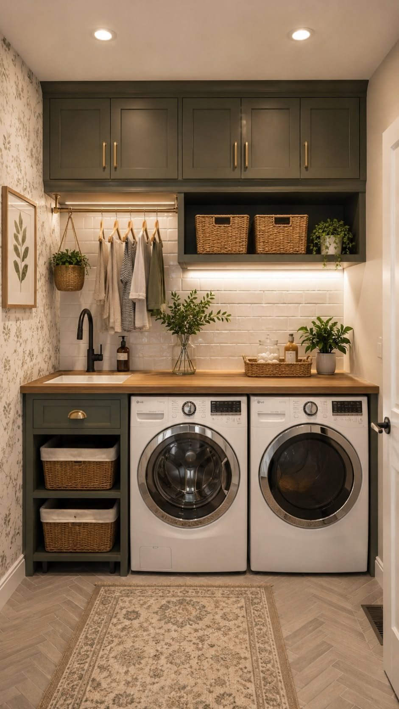
And remember that visual clutter makes small rooms feel even smaller.
Keep counters relatively clear, choose a limited color palette, and use matching baskets where possible. Suddenly that tiny laundry room starts feeling much more intentional.
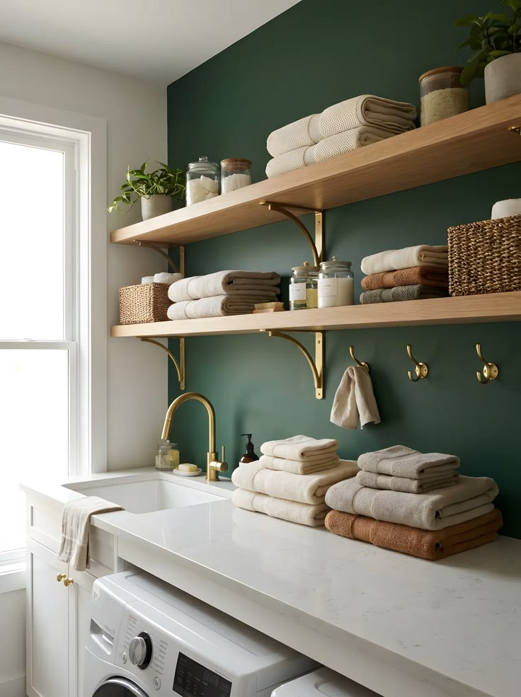
How Do You Keep a Laundry Room Organized?
The easiest way to keep a laundry room organized involves giving everything a specific home.
Keep frequently used products within easy reach. Store backup supplies higher up or inside closed cabinets.
Use labels if multiple people in the household share the room. A simple system can prevent everyone from opening every cabinet looking for stain remover.
I also recommend keeping a small empty zone on the counter. You'll appreciate that space when you need somewhere to sort clothes, place a fresh load, or deal with a stubborn stain.
The advice to simply organize like items together, then lean on baskets and labels to make everything easier to find, holds up well in practice. Simple systems usually beat complicated ones because people actually keep using them.
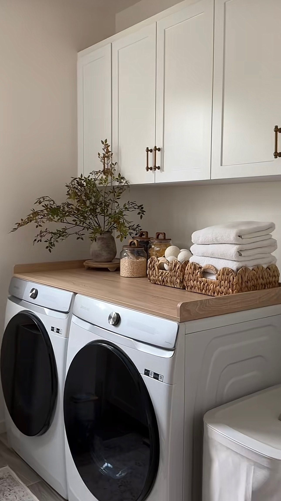
What Should You Prioritize in Your Laundry Room?
If you're working with a limited budget, don't try to renovate everything at once.
Start with the improvements that affect your daily routine.
I'd prioritize a practical folding surface, vertical storage, a drying solution, better lighting, easy-access detergent storage, a hamper or sorting system, and a sink if your plumbing and space allow it.
Then add decorative elements once the practical problems disappear.
There's no point installing gorgeous wallpaper if you still have nowhere to put the laundry basket.
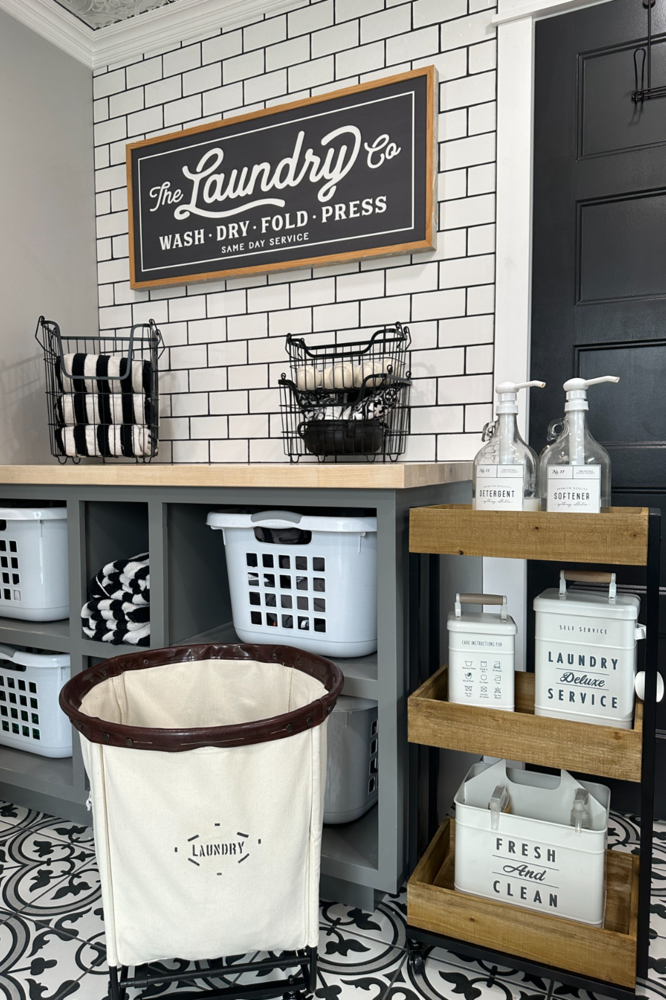
18 Laundry Room Ideas Worth Trying
1. Make the Laundry Room Feel Like Part of the Home
This idea might actually make the biggest visual difference of anything on this list.
Stop treating the laundry room like a utility box.
Carry elements from the rest of your home into the space. Repeat your cabinet color, flooring, hardware, wood tones, or wall color.
You could add a framed print, a small runner, attractive hooks, or a simple piece of artwork.
The goal doesn't involve making the laundry room fancy for the sake of being fancy. The goal involves making the room feel like a real part of your home.
Laundry rooms increasingly combine style, storage, flexible work zones, and multiple household functions rather than serving only as places for washing clothes.
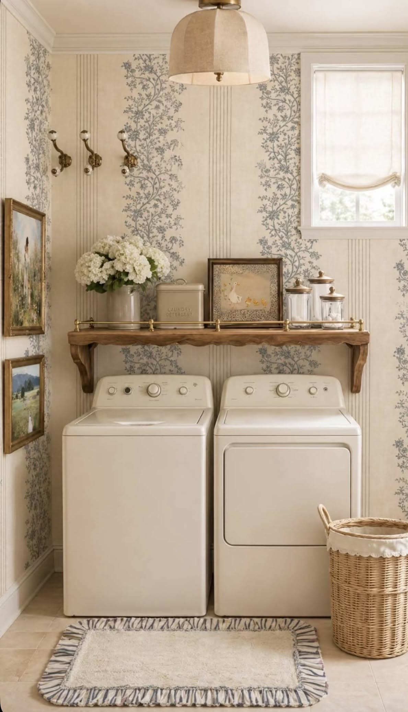
2. Turn an Awkward Laundry Closet Into a Feature
Not everyone has a spacious laundry room. Some people have a closet.
That doesn't mean you can't make it look great.
Stack your washer and dryer, add a shelf above them, install a slim hanging rod, and use the door for hooks or additional storage.
Converting an unused closet into a compact laundry area, with the right organization system layered in, can make it genuinely functional.
For a laundry closet, I'd focus heavily on vertical storage and accessibility. Every inch needs a purpose because you don't have many inches to waste.
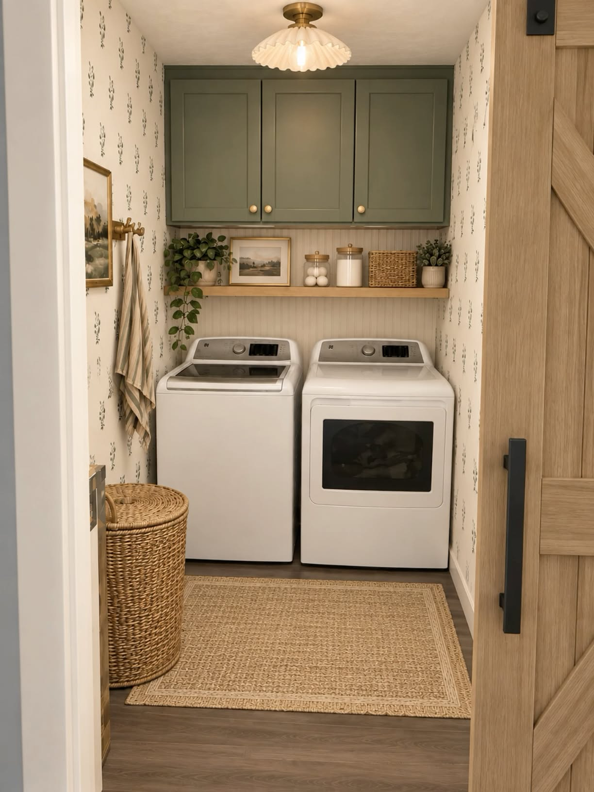
3. Use Matching Containers
This sounds like a small detail, but matching containers can completely change the appearance of open shelves.
Instead of displaying mismatched detergent bottles, transfer suitable products into clearly labeled containers where appropriate.
Use baskets for clothespins, cleaning cloths, extra sponges, dryer accessories, stain-treatment supplies, and other small household items.
Glass jars, baskets, and labels are standard advice for organizing laundry products and smaller supplies, and for good reason.
Just make sure you keep original product information and safety instructions available whenever you transfer household products into another container.
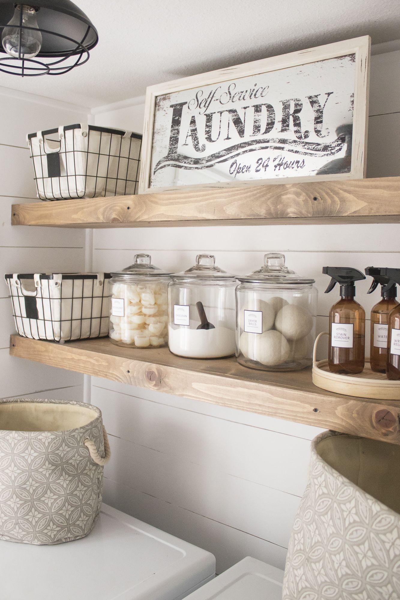
4. Add a Laundry Room Backsplash
A backsplash can give a basic laundry room much more personality.
Tile also makes sense behind a sink or countertop because it gives you a durable surface that you can clean easily.
You could use classic subway tile, handmade-look tile, small square tiles, or even a bold patterned design.
I'd keep the backsplash relatively simple if you already have colorful cabinets or wallpaper. Otherwise, the room can start competing with itself.
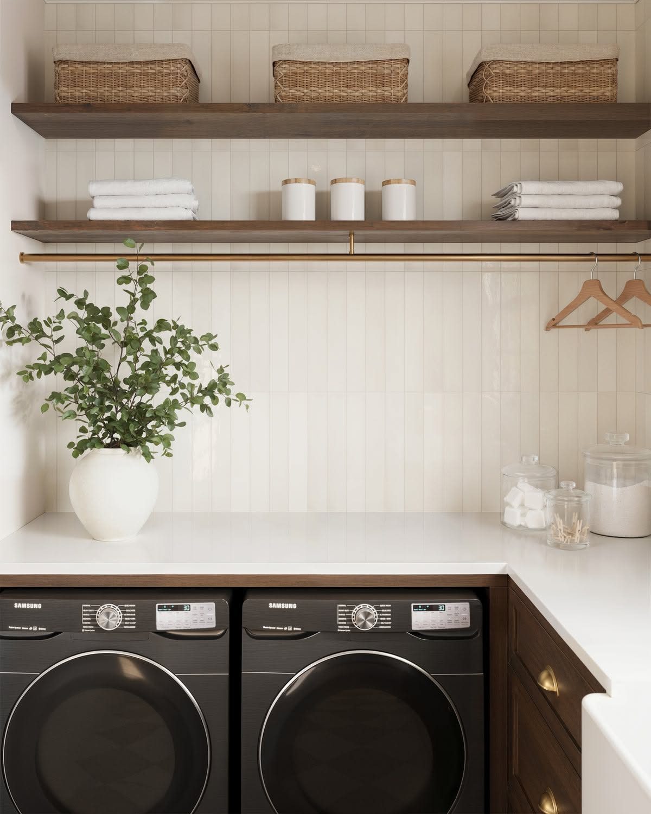
5. Create a Dedicated Pet Washing Zone
If your laundry room sits near the backyard, consider turning part of it into a pet-friendly zone.
A utility sink can handle muddy paws. Lower cabinets can store towels and grooming supplies. Hooks can hold leashes, brushes, and washable bags.
You don't need to build a full pet spa. A small dedicated area can make everyday cleanup much easier.
Recent laundry room design trends also lean into using laundry areas as hybrid spaces for pets and other household tasks.
And honestly, your dog probably won't complain about the upgraded decor.
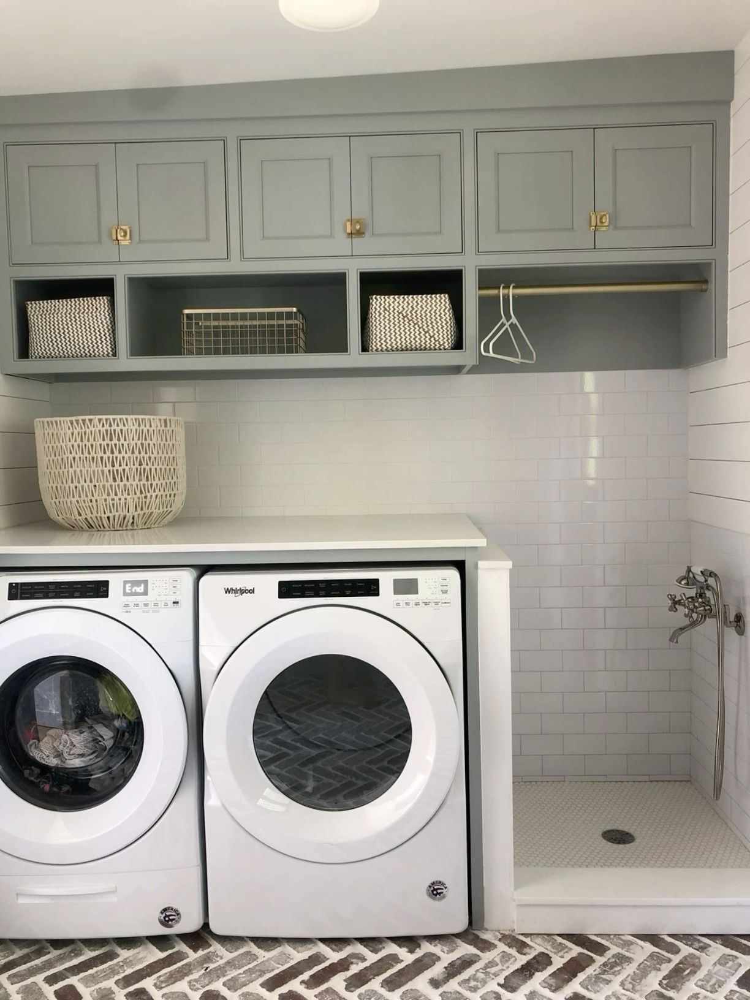
6. Try Wallpaper for Personality
Wallpaper can make a surprisingly big impact in a small laundry room.
Since laundry rooms often have limited wall space, you don't need a huge amount of wallpaper to create a noticeable change.
Floral patterns, small botanical prints, vintage-inspired designs, and subtle geometric patterns can all work.
Bold wallpaper, colorful cabinetry, statement lighting, and patterned tile are all common laundry room decorating approaches worth borrowing from.
If you've always wanted to try a playful wallpaper but felt nervous about committing to it throughout the house, the laundry room gives you a lower-risk place to experiment.
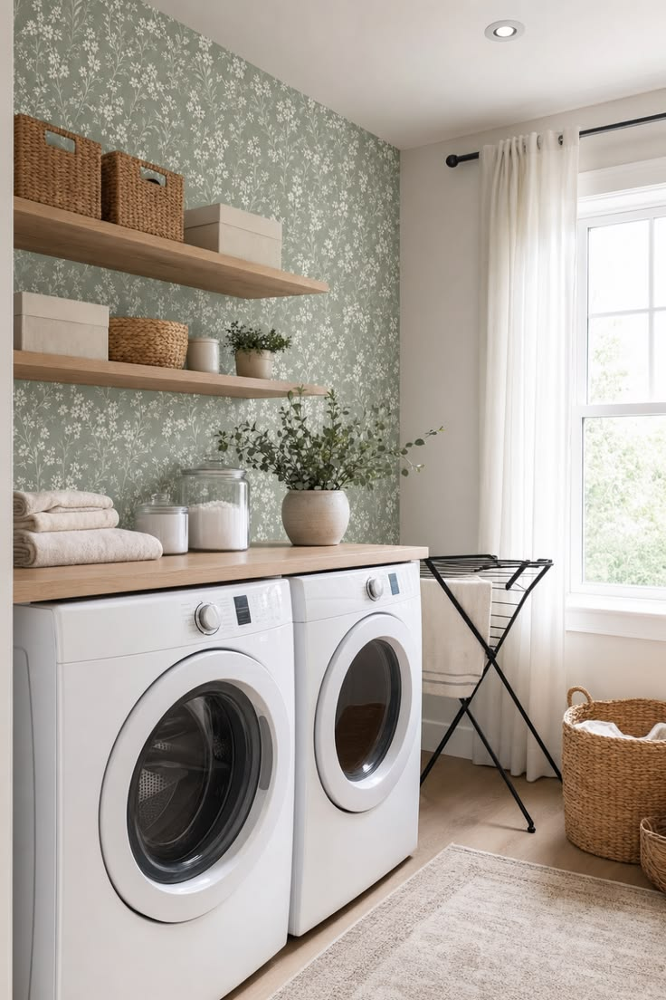
7. Give the Laundry Room a Real Color Palette
Why should laundry rooms automatically get white walls?
They don't.
Soft greens, warm neutrals, muted blues, earthy taupes, and gentle grays can make the room feel much more welcoming.
For a cozy laundry room, I particularly like warm whites paired with natural wood. For something moodier, deep green cabinets with brass hardware can look fantastic.
The key involves choosing colors that complement the rest of your home rather than treating the laundry room like a completely unrelated space.
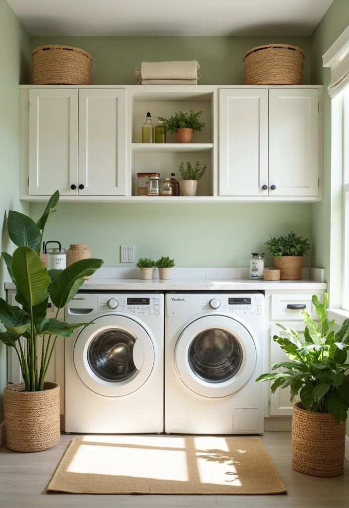
8. Add Under-Cabinet Lighting
Good lighting matters more in a laundry room than people realize.
You need to see stains, labels, colors, and small items clearly. A dim ceiling fixture can make the entire room feel gloomy.
Under-cabinet lighting adds useful task lighting directly where you need it, especially above a countertop.
You can also combine ceiling lighting with under-cabinet fixtures for a layered effect.
Thoughtful lighting design and automatic controls can genuinely contribute to a more efficient laundry room, not just a nicer-looking one.
If you're renovating, plan lighting before installing cabinets. Trust me, adding lighting afterward usually creates unnecessary headaches.
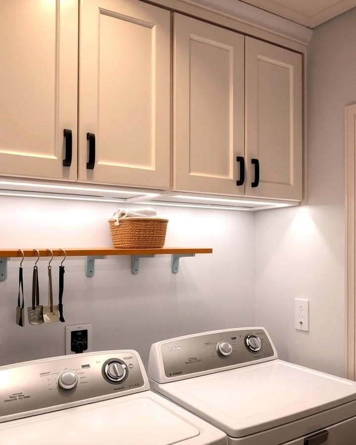
9. Choose Closed Laundry Room Storage
Open shelving looks beautiful in photographs, but real life involves detergent bottles, stain sprays, random clothespins, and approximately seventeen things you forgot you owned.
That's where closed storage helps.
Use cabinets for the messy stuff and reserve open shelves for items you actually want to display.
You can also use matching baskets inside cabinets to keep smaller items organized.
Hidden storage and opaque bins are a reliable way to maintain a cleaner visual appearance overall.
Sometimes the best decorating trick simply involves closing a door.
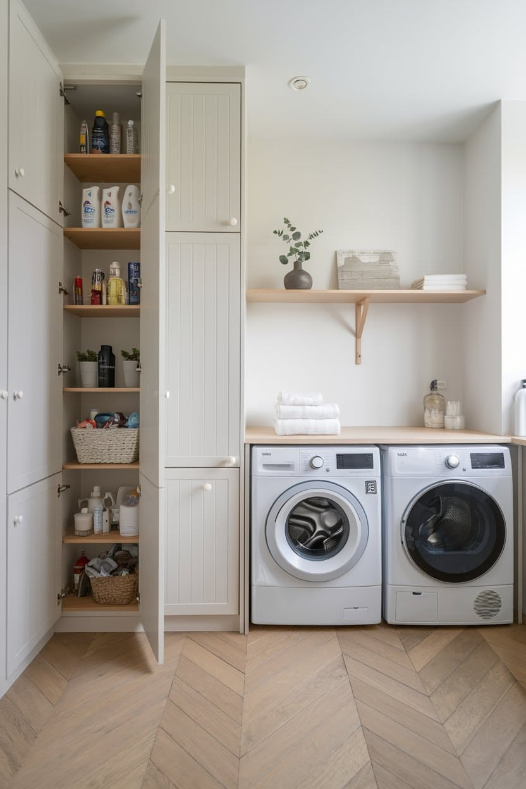
10. Make Use of a Slim Rolling Cart
That strange three-inch gap between the washer and wall might look useless.
It isn't.
A slim rolling cart can slide into narrow spaces and store detergent, stain removers, cleaning cloths, brushes, or other supplies.
Utility carts are a smart pick for tight or unusual spaces specifically because you can move them whenever your storage needs change.
I like flexible storage because your needs can change. A permanent cabinet works beautifully until you realize you need the space for something else.
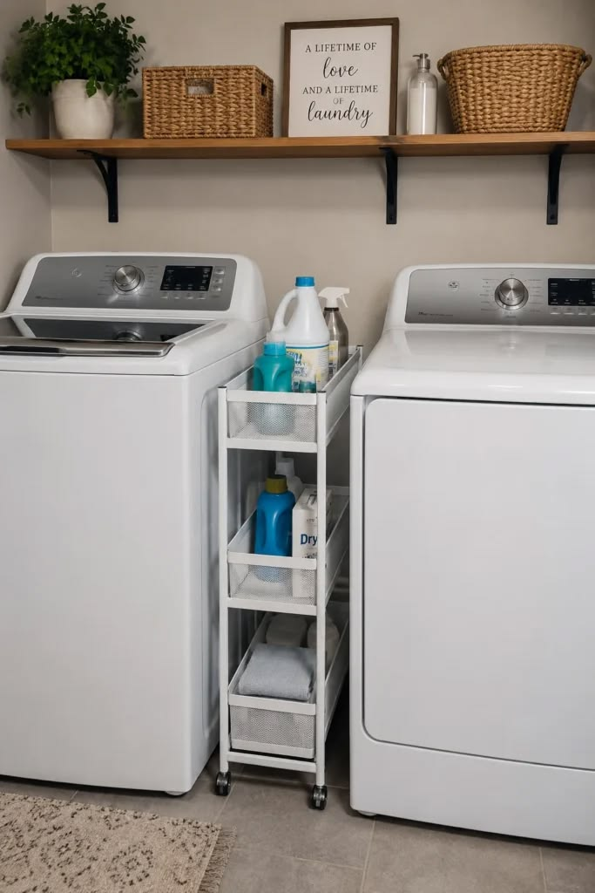
11. Use Pull-Out Hampers
If dirty clothes always end up in random baskets around the house, consider built-in pull-out hampers.
You can create separate compartments for lights, darks, towels, or delicates. When laundry day arrives, you simply pull out the hamper and transfer the contents into the machine.
Pull-out storage also keeps bulky hampers from taking over the floor.
For me, the biggest benefit involves reducing visual clutter. When the dirty laundry disappears behind a cabinet door, the entire room immediately feels cleaner.
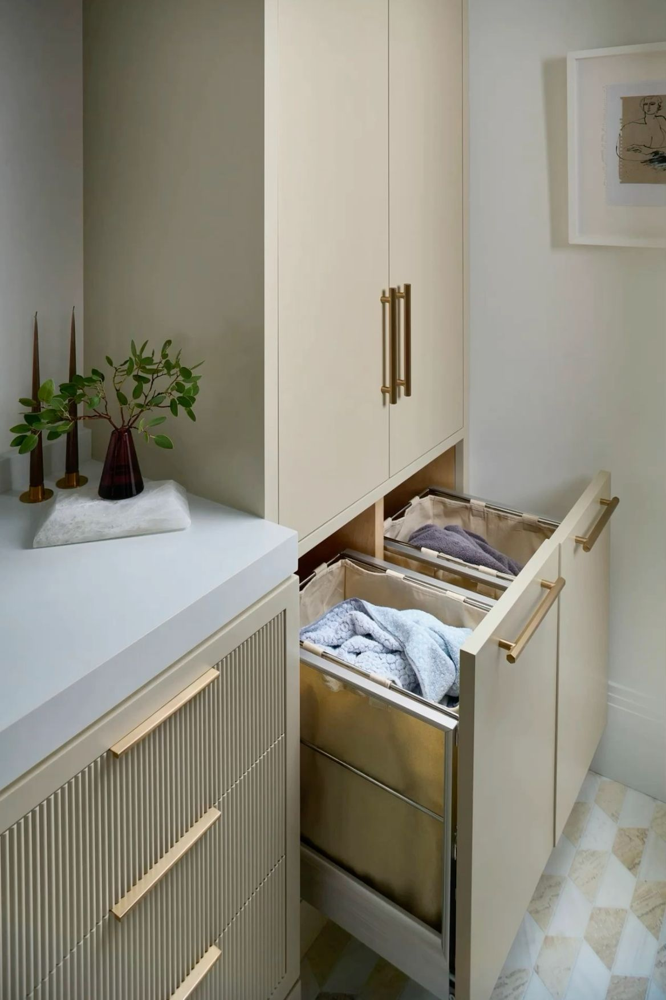
12. Add a Hanging Rod
A hanging rod can turn an awkward wall into a useful part of your laundry routine.
Install one above a counter or between cabinets and use it for shirts, dresses, jackets, or clothes that need to air dry.
This works especially well if you prefer to hang clothing immediately after removing it from the dryer.
You can also use attractive hangers to make the setup feel more intentional. Yes, even laundry can have a little style.
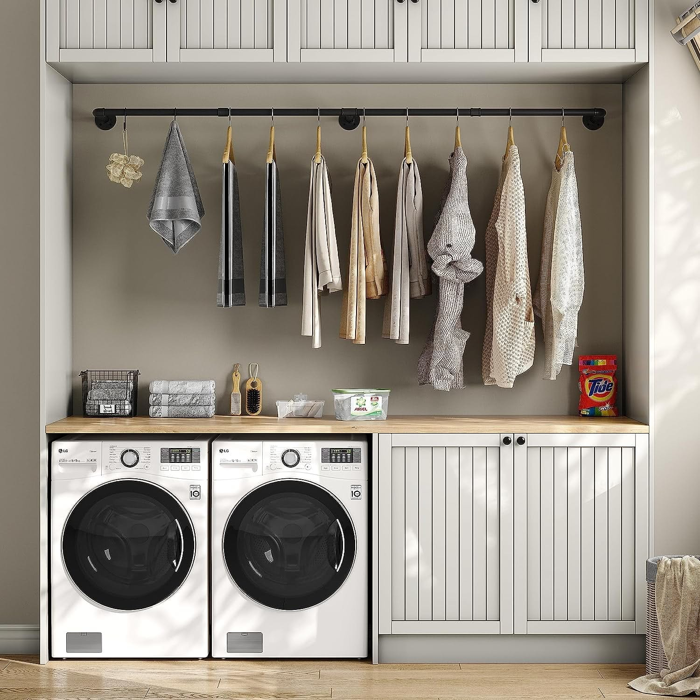
13. Install a Wall-Mounted Drying Rack
Not everything belongs in the dryer.
A wall-mounted drying rack gives delicate clothing a dedicated place to dry without consuming your entire floor.
I particularly like fold-away versions because you can close them against the wall when you finish using them.
A pull-out drying rack is a genuinely clever space-saving build, giving you room to dry delicate items without permanently losing floor space.
For very small laundry rooms, this idea can make a huge difference because you gain drying space without permanently sacrificing anything else.
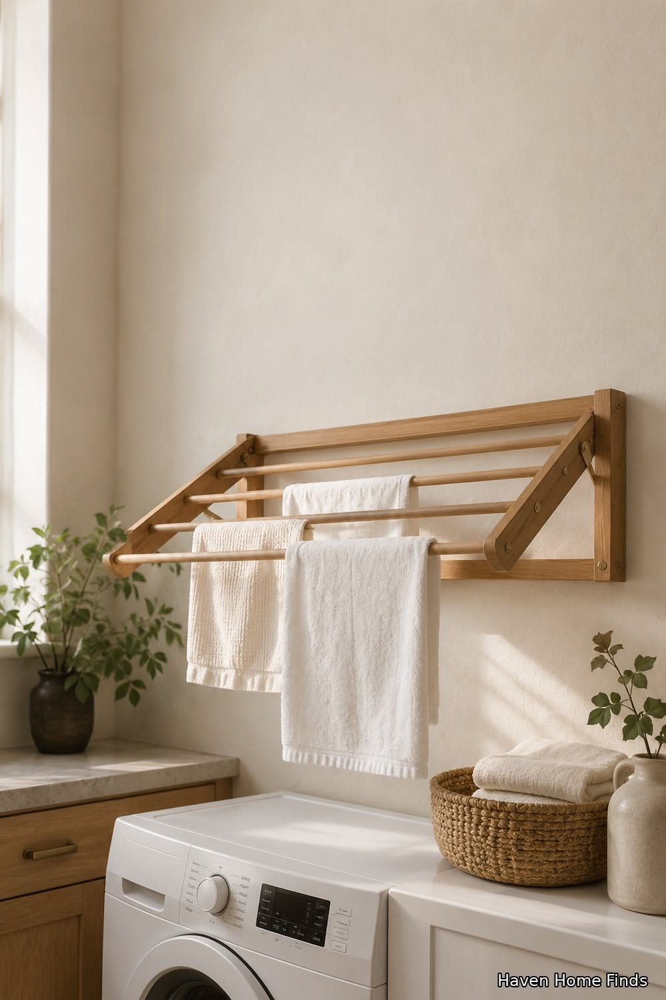
14. Add a Laundry Room Sink
A utility sink might sound old-fashioned, but I wouldn't dismiss it.
A sink gives you a dedicated place for soaking stained clothes, rinsing muddy shoes, washing delicate items, or handling messy cleaning jobs.
Laundry sinks are especially useful for presoaking, rinsing heavily soiled clothes, and handwashing delicate items that shouldn't go near a machine.
If you have limited room, consider a smaller wall-mounted or undermount sink rather than a large freestanding basin.
And honestly, having a sink in the laundry room can keep some very unpleasant jobs away from your kitchen sink. That alone makes it worthwhile.
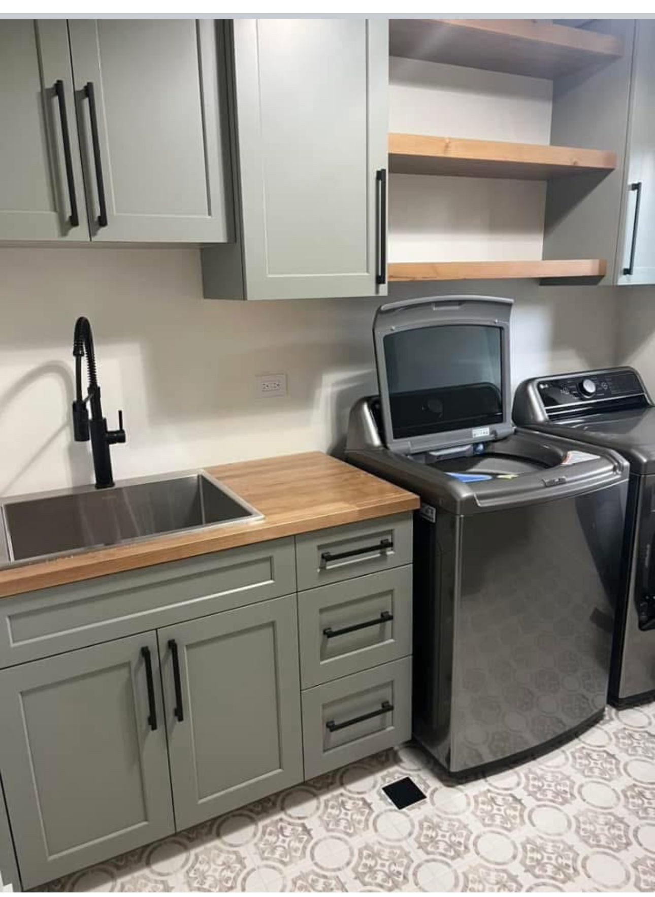
15. Create a Dedicated Folding Station
A folding station can completely change the way you use a laundry room.
If your room has enough space, install a counter beside the machines. If space feels tight, use a wall-mounted folding surface or a narrow console-style counter.
Think about the height carefully. You want enough room to fold comfortably without constantly bending over.
A folding surface also helps separate the stages of laundry. Clothes can move from the dryer to the counter, from the counter into baskets, and from the baskets to their final destination.
That simple workflow can save more frustration than another decorative basket ever will.
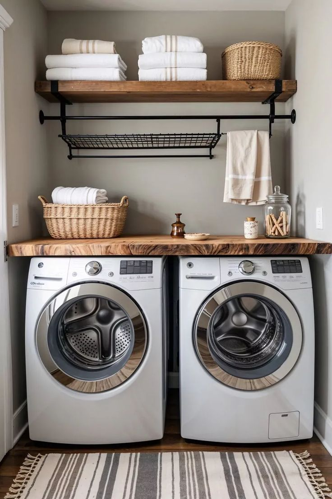
16. Install Floating Shelves
If cabinets feel too heavy for your laundry room, try floating shelves.
They work especially well above a washer and dryer, beside a utility sink, or along a narrow wall. Use baskets to keep smaller products together and leave a little open space so the shelves don't look overloaded.
I prefer mixing practical storage with a few decorative pieces. A small plant, framed print, or attractive container can make the room feel intentional without turning it into a showroom.
The goal involves useful decoration, not decoration that gets in the way of doing laundry.
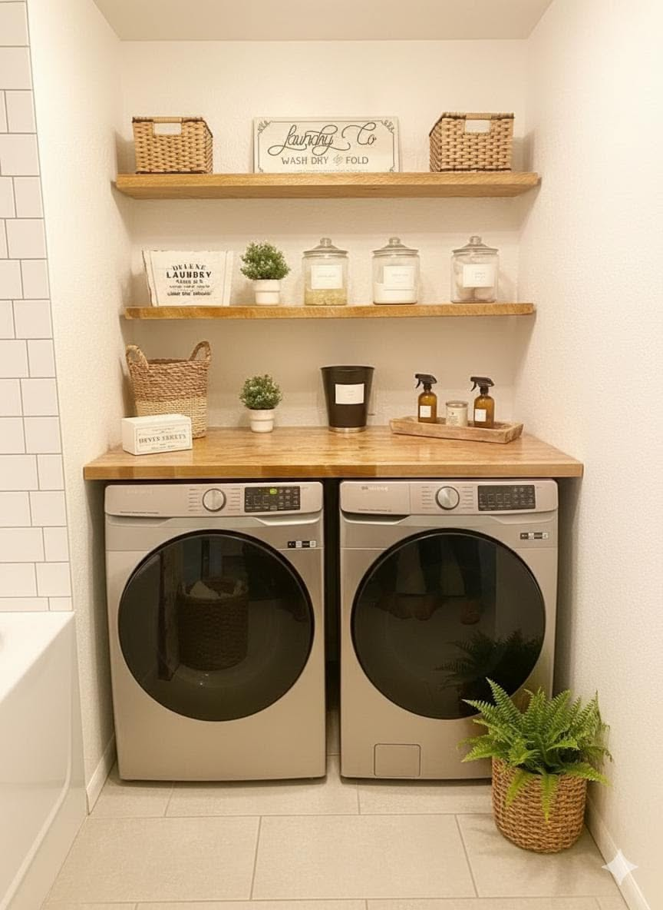
17. Use Tall Cabinets for Laundry Room Storage
When floor space feels limited, look up.
Tall cabinets can take advantage of vertical space while keeping detergent, cleaning products, towels, paper products, and other supplies out of sight.
I particularly like tall cabinets when a laundry room also functions as a general utility space. You can dedicate different shelves to different categories instead of throwing everything into one enormous cabinet.
Leaning on vertical storage and cabinets like this is one of the most reliable ways to maximize laundry room organization.
Keep everyday products around waist or eye level and reserve the highest shelves for things you rarely use.
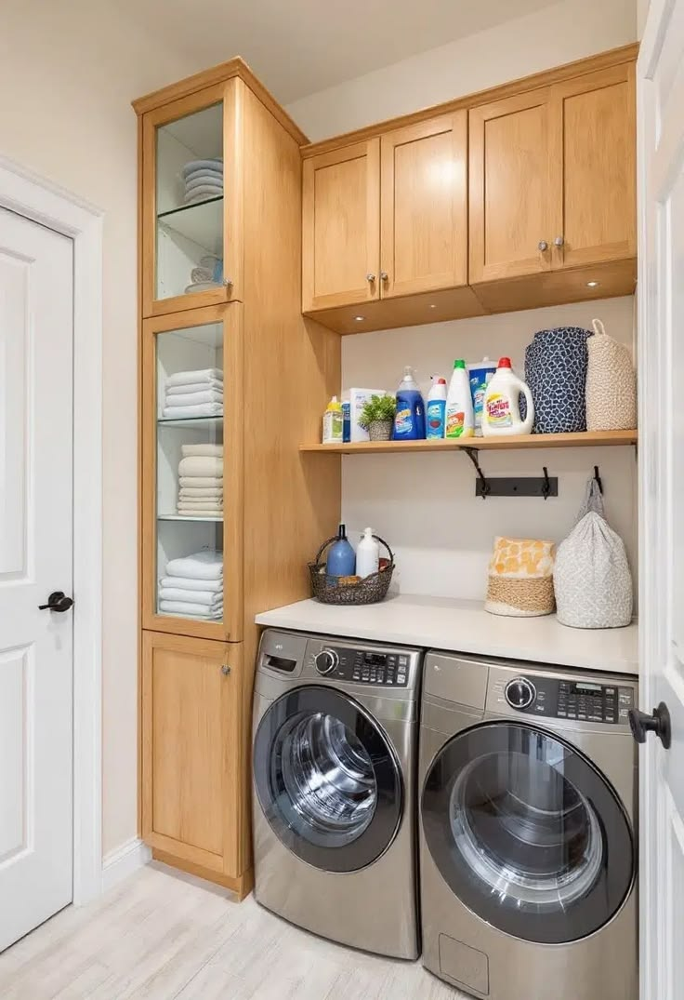
18. Add a Countertop Over the Washer and Dryer
One of my favorite laundry room ideas involves something incredibly simple: a countertop.
If you have front-loading machines sitting side by side, add a continuous countertop above them. You instantly create a folding station without sacrificing additional floor space.
The surface also gives you somewhere to place laundry baskets temporarily. You can fold clothes straight from the dryer instead of carrying everything to another room and creating a second laundry pile there.
A countertop above side-by-side machines genuinely earns its space, giving you a real workspace for folding, ironing, and keeping frequently used items nearby.
For a clean look, choose a countertop that coordinates with your cabinets rather than trying to make every element match perfectly.
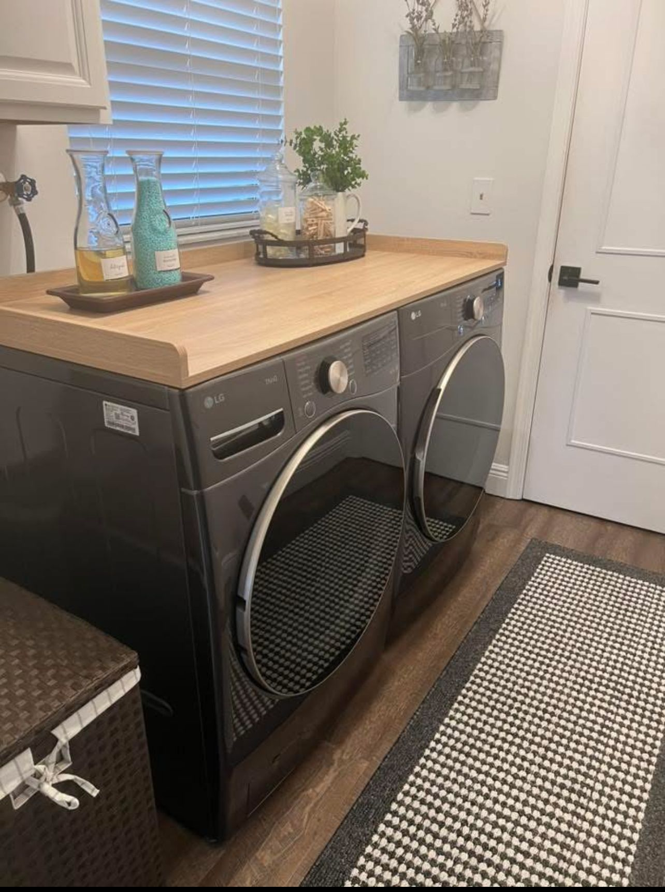
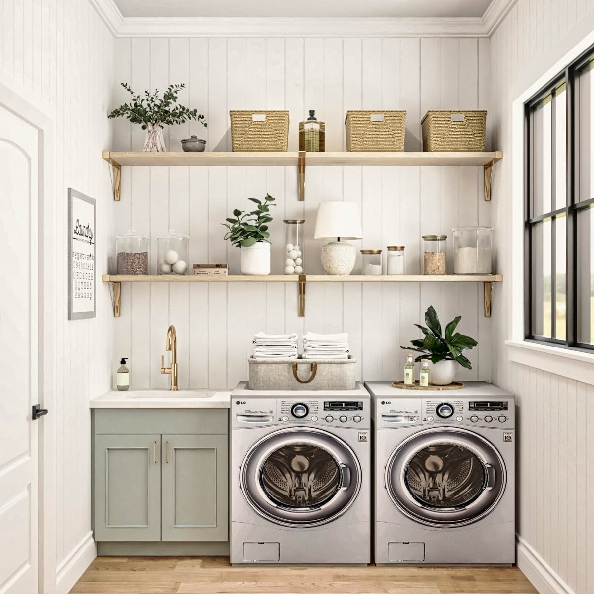
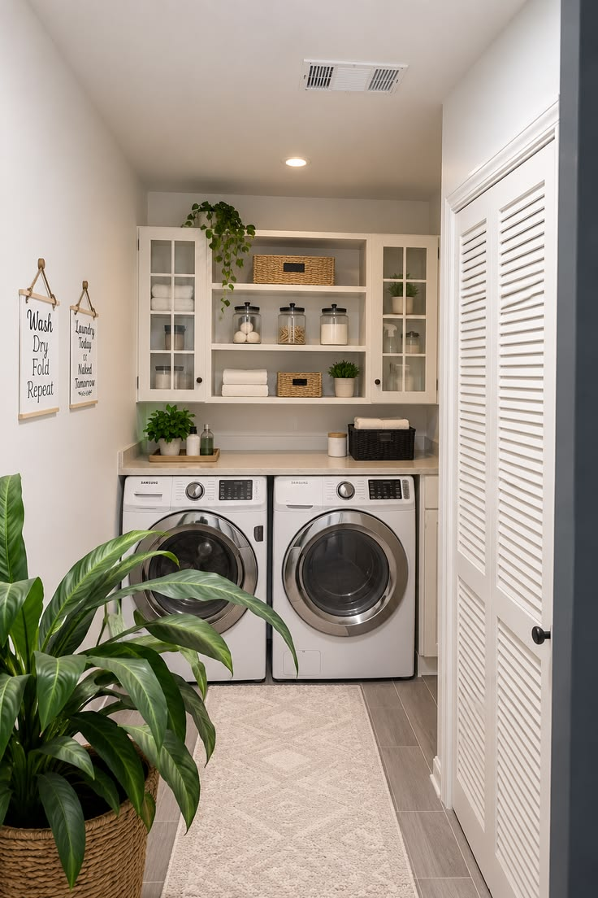
How Do You Make a Small Laundry Room Feel Bigger?
Small laundry rooms need smart planning more than expensive decoration. I've seen tiny spaces work incredibly well simply because the homeowner used the walls, corners, and vertical space properly.
Stacked appliances can immediately free up floor space. Floating shelves can replace bulky cabinets. A slim rolling cart can squeeze into an awkward gap and hold detergents, cleaning products, or extra towels.
Stackable washers and dryers, pull-out storage, vertical space, and countertops are the standard advice for making compact laundry rooms more functional, and for good reason.
And don't forget visual space. Light walls, consistent cabinetry, simple hardware, and fewer items sitting on the counter can make a cramped room feel calmer.
Ever noticed how quickly a small room looks chaotic when every bottle and basket sits out in the open? Laundry rooms somehow turn clutter into a competitive sport.
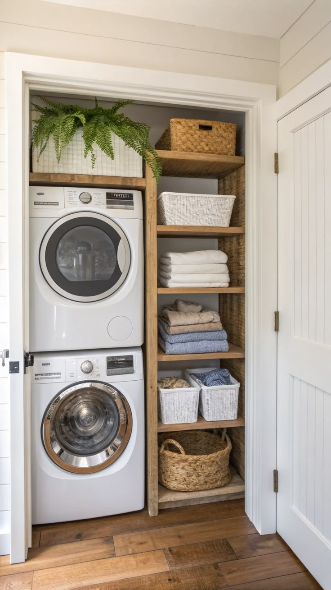
What Makes a Good Laundry Room?
Before choosing paint colors or pretty baskets, think about the jobs your laundry room needs to handle.
A good laundry room should make the basic process easier: sorting, washing, drying, folding, hanging, and storing. If you constantly have to move things around just to reach the detergent, the prettiest cabinets in the world won't save the layout.
The real key to an efficient laundry room is making the most of whatever space you actually have, rather than needing more of it.
That idea has always made sense to me. You don't necessarily need more square footage. You need to make the square footage you already have work harder.
Think about adding a folding surface, vertical storage, easy-access detergent storage, a place for hanging clothes, a drying rack, a hamper or sorting system, good task lighting, and a utility sink if your space allows it.
Once those basics work, you can worry about making the room beautiful.
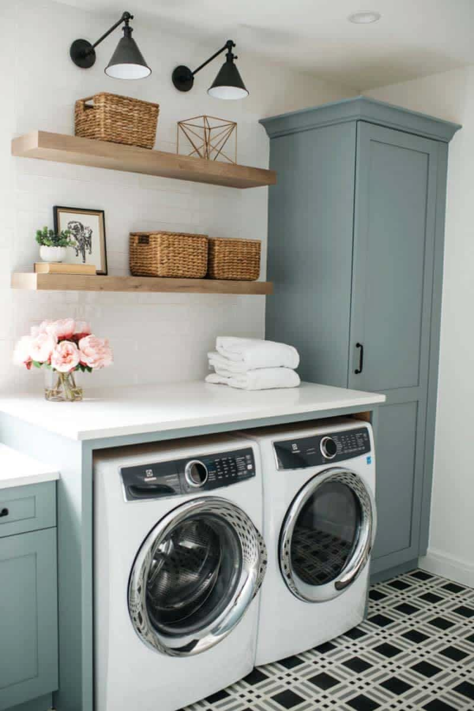
Final Thoughts on These Laundry Room Ideas
The best laundry room ideas don't simply make the room prettier. They make laundry easier.
A countertop gives you somewhere to fold. A drying rack gives delicate clothes a place to hang. Cabinets hide clutter. Shelves keep essentials accessible. Good lighting helps you actually see what you're doing.
And then you can have some fun.
Choose a beautiful paint color. Add wallpaper. Install interesting hardware. Bring in a little artwork. Make the space feel like yours.
After all, you're probably going to spend plenty of time there.
So why settle for a room that looks like it exists solely because the washing machine demanded somewhere to live?
Create a laundry room that works hard, stays organized, and still makes you smile when you walk in. Your future laundry piles probably won't disappear, but at least they'll have a much nicer place to wait.